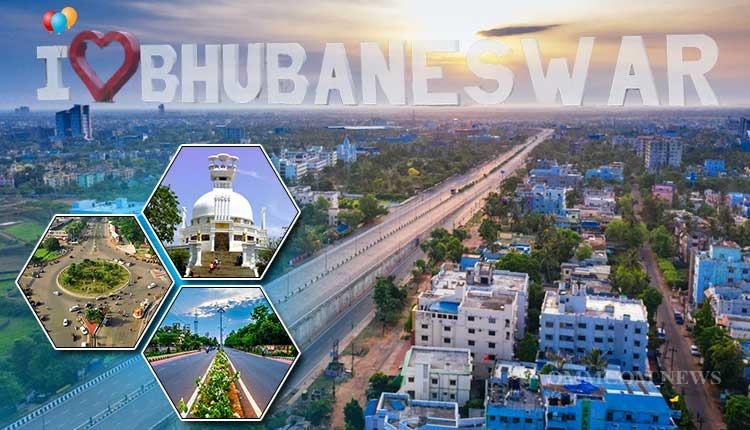

Bhubaneswar

History
Bhubaneswar, the capital city of Odisha, is known as the 'Temple City of India' for its numerous ancient temples. The city has a rich history that dates back to over 2,000 years and is a major center of religious, cultural, and historical significance.
About
Bhubaneswar is a vibrant city that beautifully blends ancient architecture with modernity. It is home to several notable temples, including the Lingaraj Temple, Mukteswara Temple, and Rajarani Temple. The city is also a hub for commerce, education, and information technology.
Maps Location
Bhubaneswar is located in the eastern part of India, in the state of Odisha. It is well-connected by road, rail, and air. The Biju Patnaik International Airport serves as the primary airport for the city.